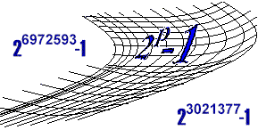

INSTRUCTIONS

--------------
There are two ways to use this program. The automatic
way uses a central server, which we call the PrimeNet server, to get
work to do and report your results.
Anyone with Internet access, including AOL, CompuServe, and dial-up ISP
users should use this method. You do
not need a permanent connection to the Internet.
The second method is the manual method. It requires a little more work and monitoring. I recommend this for computers with no
Internet access or with some kind of firewall problem that prevents the
automatic method from working.
If you are running this program at your place of
employment, you should first GET PERMISSION from your network administrator or
boss. This is especially true if you
are installing the software on several machines. Some companies are reluctant to run any software they are not
familiar with.